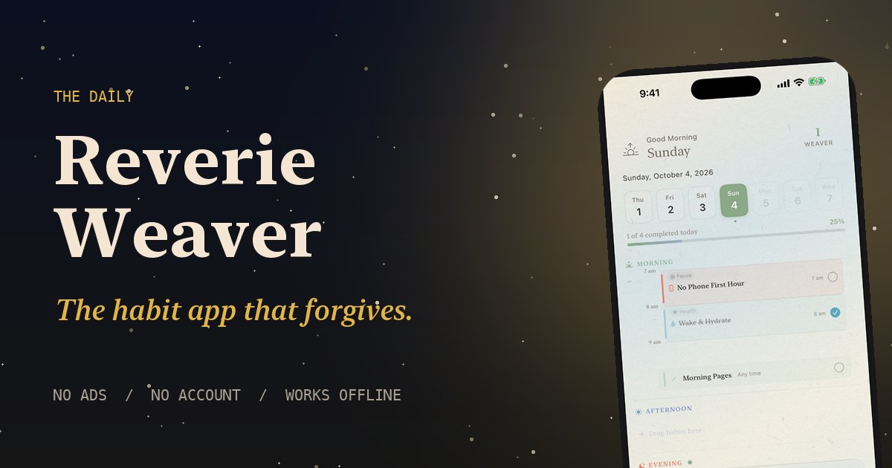

I · At a glance
The facts.
| App | Reverie Weaver |
|---|---|
| Tagline | The habit app that forgives. |
| Publisher | Reverie Archive |
| Platforms | iPhone and iPad, iOS 17.6 or later |
| Version | 1.0.0 |
| Availability | Coming to the App Store |
| Languages | English and Simplified Chinese, switchable in Settings |
| Price | Free to download. Optional Weaver+ subscription. |
| Privacy | No ads, no analytics, no third-party tracking. No account needed. Works offline. iCloud sync is optional and off by default. |
| Contact | reveriearchive.studio@gmail.com |
II · Words to borrow
Three lengths, in our own voice.
Reverie Weaver is a gentle habit companion for iPhone and iPad that forgives missed days, celebrates coming back, and keeps your data on your device.
Reverie Weaver is a habit companion for iPhone and iPad, made for people who have been shamed by streaks. Days can be a Seed, a Sprout, or a Bloom, rest days count, and a Grimoire of constellations, levels, and hidden notes grows as you return. There are no ads and no account, and it works offline. It is free to start, with an optional Weaver+ subscription.
Reverie Weaver is a gentle habit companion for iPhone and iPad. Where most habit apps are built on streaks and scolding, it is built on coming back: a hard day can be a Seed instead of a failure, rest days are part of the plan, and challenges leave room to miss a day.
Around the habits sits a small world. A Desk for today, a Loom for focus, with a timeline, three priorities, and a timer whose landscape Sound Studio mixes music and atmosphere independently, and an Archive for looking back kindly. The Weaver’s Grimoire grows quietly alongside: thirteen constellations with lore of their own, six Weaver levels, and notes found tucked inside the loom.
Reverie Weaver keeps what you write on your device. There are no ads, no analytics, and no account, and it works offline. It is available in English and Simplified Chinese, and free to start, with an optional Weaver+ subscription. It is published by Reverie Archive.
III · How pricing works
So nobody has to guess.
Reverie Weaver is free to download and free to start. Weaver+ is planned at $3.99 a month or $24.99 a year in the US, with a 7-day free trial on the annual plan for eligible Apple Accounts. A $59.99 lifetime purchase may be offered only from December 20 through Lunar New Year’s Day. The free version includes up to three active habits of your own, the whole Grimoire, and everything you have written, always. Weaver+ adds the Habit Library, guided programs, unlimited focus sessions and priority tasks, and writing new reflections.
The App Store shows prices in local currency. The short version, if you need one: Free to start. Weaver+ when you want more.
IV · Screenshots and icon
Real captures, at full size.
Every screenshot is taken in the app on a 6.9-inch iPhone (1320 by 2868 pixels). Nothing is mocked up or redrawn.

 Simple Mode, a planned dayJPEG · 1320 × 2868
Simple Mode, a planned dayJPEG · 1320 × 2868
 Full Mode DeskJPEG · 1320 × 2868
Full Mode DeskJPEG · 1320 × 2868
 The LoomJPEG · 1320 × 2868
The LoomJPEG · 1320 × 2868
 The ArchiveJPEG · 1320 × 2868
The ArchiveJPEG · 1320 × 2868
 The Habit LibraryJPEG · 1320 × 2868
The Habit LibraryJPEG · 1320 × 2868
 Gentle ProgressJPEG · 1320 × 2868
Gentle ProgressJPEG · 1320 × 2868
 The GrimoireJPEG · 1320 × 2868
The GrimoireJPEG · 1320 × 2868
 A card’s loreJPEG · 1320 × 2868
A card’s loreJPEG · 1320 × 2868
 Profile and levelJPEG · 1320 × 2868
Profile and levelJPEG · 1320 × 2868

Link preview cardJPEG · 1200 × 630
These show the free app as it opens on a first day. Screens that need Weaver+ will be added once it is live.
V · Brand
Paper by day, midnight and gold by night.
Reverie Weaver looks like a beautiful object, not a dashboard: warm paper and a serif for the day, and for the Grimoire, antique gold on midnight, framed like tarot cards.
Colors
Type
Titles and reading text use the system serif (New York on Apple devices). Small labels are set in the system sans, in capitals with wide tracking. The masthead reads THE DAILY above REVERIE WEAVER.
The icon
An eight-point star on a mauve-to-gold gradient. Use it as supplied: iOS rounds the corners, so please don’t add your own mask, and don’t recolor it, add effects, or place text over it.
Voice
Warm, plain, a little literary. It never pushes, never counts down, and never promises more than the app does. The phrases the app already uses are the best ones: the return is the victory; a Seed day still counts; every tapestry begins with one honest thread.
VI · Describing the app
Please say, please avoid.
Please say
- “A gentle habit companion for iPhone and iPad.”
- “Free to start, with an optional Weaver+ subscription.”
- “No ads, no account, works offline.”
- “Available in English and Simplified Chinese.”
- “Forgiving by design: seed, sprout, and bloom days, and rest days that count.”
Please avoid
- “Free” on its own, “no subscription,” or “unlimited” anything. Weaver+ is optional, but it is there.
- “Science-backed,” or anything that suggests the app treats, diagnoses, or cures.
- Release dates, regions, ratings, or download numbers we haven’t published.
- Countdowns, scarcity, or urgency. It isn’t that kind of app.
If you received free access to Reverie Weaver, please say so, as your local advertising rules require.
VII · Contact
Write to us.
For review access, interviews, or anything missing from this kit: